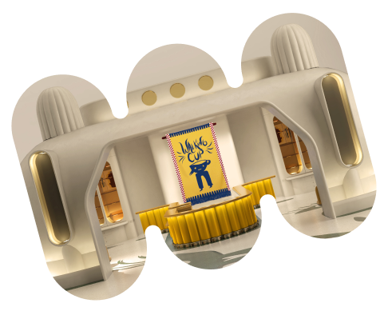
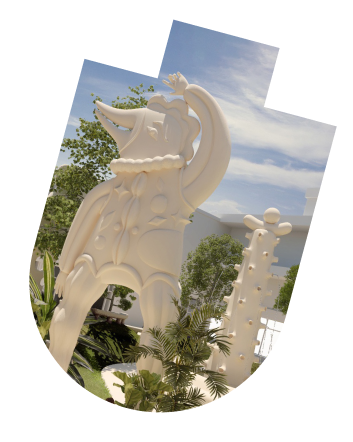
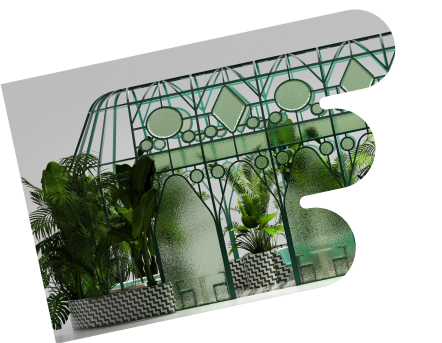
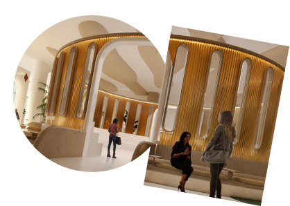
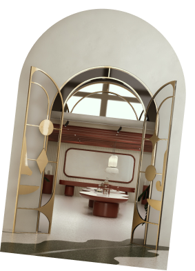

The forum
Tour Guide
- 
- 
- 
- 
- 
Tour Guide
01
호기심을 깨워주는 디자인이 돋보이는 카페 워킹컵은 하이메 아욘이
'컵과 같이 걸을 수 있다면 어떨까?'라는 재밌는 생각에서 시작되었습니다.
이곳에서만 만나볼 수 있는 크림이 들어간 워킹컵 라떼는 하이메 아욘이
머릿속에서 그리던 워킹컵에 담겨 나옵니다.
02
더 포럼을 관통하는 중심 스페이스로 더 포럼의 상징이되는 곳입니다.
콜로세움은 로마 사람들이 모여 토론을 벌이던 광장처럼 더현대 대구의
문화 광장이 되어 다채로운 예술과 퍼포먼스가 펼쳐질 예정입니다.
 colosseum ㅡ 02
colosseum ㅡ 0203
게이츠 가든에는 길목마다 문의 모습을 한 독특한 모양의 조각들이 위치하고
있습니다. 하이메 아욘의 상상 속에서 튀어나온 6개의 조각상과 함께 계절의
변화에 따라 모습을 달리하는 식물들을 관찰하고 감상하며 산책을 즐겨보세요.
04
하이메 아욘의 다양한 굿즈를 만날 수 있는 더 포럼 샵은 그가 작업하면서
그린 공간 스케치와 영감을 받은 아이템 등 작업 과정을 집대성한 아카이브
공간입니다. 더 포럼에 담긴 그의 초현실적이고 유쾌한 상상을 마주해보세요.
05
하이메 아욘이 더 포럼의 영혼이라고 표현한 그린하우스는 9층 안쪽에 위치한
작은 온실입니다. 외부 공간과 느슨하게 분리된 구조물은 아늑함을 자아냅니다.
반투명한 글라스 사이로 스며드는 빛을 따라 평온한 사색에 잠겨보세요.
 Walking Cup ㅡ 03
Walking Cup ㅡ 03